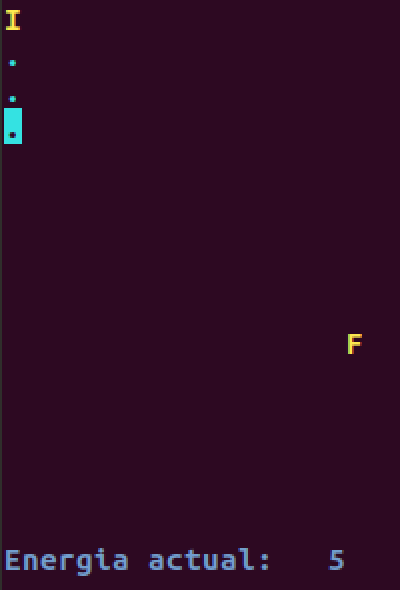
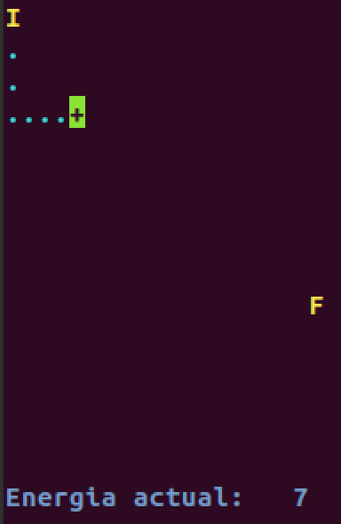
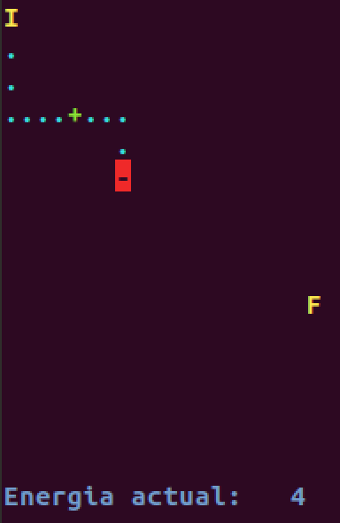
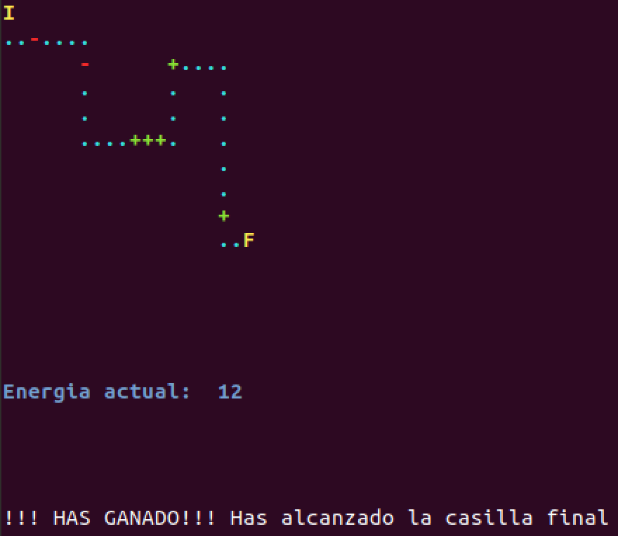
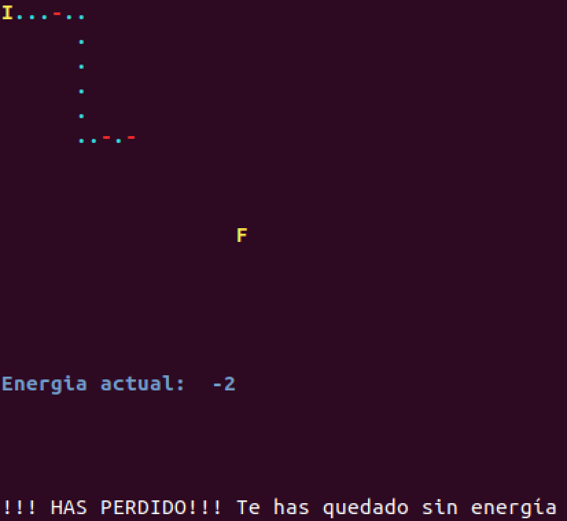
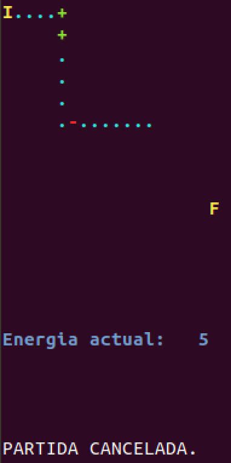

Práctica 6: Datos estructurados: Registros¶
Duración: 2 semanas
Juego: simulación de robot¶
En qué consiste el juego¶
Vamos a implementar un pequeño juego que simula el movimiento dirigido de un robot de un punto a otro dentro de un campo de energía.
El robot partirá de una posición inicial y lo iremos moviendo eligiendo cada vez una de las 4 posibles direcciones: arriba, derecha, abajo, izquierda. El cursor indicará donde está situado en cada instante el robot.
Las casillas o posiciones inicialmente no son visibles, y pueden estar vacías o disponer de recarga o pérdida de energía. El robot dispone inicialmente de una determinada energía, y el objetivo del juego es alcanzar la posición final sin que el robot se quede sin ella. Las posiciones se irán mostrando conforme avance el robot.
Ejemplos de ejecución del juego¶
En las siguientes imágenes se muestra distintas situaciones del funcionamiento del juego. Las 3 primeras imágenes muestran una secuencia de ejecución en la que desde una posición inicial (representada por el carácter 'I') y partiendo de una cantidad de energía de 5 unidades, hacemos 3 movimientos hacia abajo del robot, después de los cuales mantiene su energía inicial puesto que las posiciones visitadas están vacías (representadas con el carácter '.'). A continuación lo vamos desplazando a la derecha hasta alcanzar una posición en la que se recarga de energía (representada con el carácter '+') en 2 unidades, y finalmente después de varios movimientos en distintas direcciones alcanza una posición en la que pierde energía (representada con el carácter '-'), en concreto 3 unidades de pérdida.
  
Las 3 siguientes imágenes muestran las 3 posibles situaciones de finalización del juego:
- Alcanzar la posición final (representada por el carácter
'F'). - Quedarse sin energía.
- Cancelar la ejecución si lo decide el usuario.
  
Otros detalles del juego¶
- El entorno por el que se puede mover el robot será un tablero con unas determinadas dimensiones, en donde cada casilla del mismo representa una posición.
- El robot no se puede mover a una posición que ya ha visitado y tampoco sobrepasar los límites del tablero. Si intenta realizar un movimiento no válido, no se llevará a cabo.
- Al iniciar el juego, solo estarán visibles las casillas inicial y final, y se irán descubriendo el contenido del resto conforme sean visitadas por el robot.
Implementación del juego¶
Librería terminalIO
Se os proporciona la librería de usuario terminalIO.h. Ten en cuenta que cuando usamos una librería de usuario o estándar del lenguaje, no necesitamos conocer cómo están implementadas sus funciones, sino qué es lo que hacen y cómo se interactúa con ellas (qué datos de entrada tienen y qué datos devuelven). Por lo tanto, estudia y analiza el fichero terminalIO.h para entender todas sus funcionalidades, pero no necesitas comprender el contenido del fichero terminalIO.c. La librería te permite hacer lo siguiente:
- Mover el cursor a una determinada posición de la pantalla, así como imprimir texto o un carácter en un determinado color.
- Utilizar el mismo sistema de coordenadas para representar el tablero del juego y para movernos a una posición en la pantalla, donde la coordenada (0,0) es la esquina superior izquierda.
- Detectar qué tecla se ha pulsado, para determinar en qué dirección hay que mover el cursor (utilizando las teclas de los caracteres
'i''k''j''l') y también permitir que el usuario pueda terminar el juego en cualquier momento pulsando la tecla<ESC>.
Fichero practica6.c
Se os proporciona el fichero practica6.ca partir del cual tenéis que implementar vuestro juego. Este fichero contiene la declaración de constantes de configuración del juego y la función main() con un ejemplo de uso de la librería terminalIO. Al ejecutar el programa, puedes mover el cursor pulsando algunas de las teclas citadas anteriormente y se muestra un mensaje indicado la posición actual del mismo. El programa finaliza su ejecución cuando se pulsa la tecla <ESC>, mientras que la pulsación de cualquier otra tecla será ignorada.
Modifica el fichero practica6.c:
- Modifica la función
main()teniendo en cuenta que no debe contener más de 30 líneas de código, aparte de la declaración de variables. - Añade nuevas constantes y tipos de datos.
- Añade funciones que modularicen correctamente el programa.
-
Guarda en una matriz la información necesaria para cada casilla del tablero:
- descriptor de la casilla
- color del descriptor
- si ha sido visitada o no
- cantidad de energía
-
Antes del inicio del juego, tendrás que inicializar la información de todas las casillas, aunque sólo se visualizará en pantalla la posición inicial y final. No obstante, en las primeras pruebas de tu programa, es recomendable que muestres todo el tablero, para comprobar el correcto funcionamiento del mismo.
-
La cantidad de energía que se asigna a una casilla debe ser un valor aleatorio, con un determinado máximo de energía establecido en una constante de configuración. Para generar valores aleatorios, utiliza las funciones de C
rand()ysrand():- Añade las librerías
<stdlib.h>y<time.h>. -
Para generar números aleatorios dependiendo del instante de tiempo en el que estamos ejecutando el programa, hay que inicializar la semilla. Para ello añade al principio de la función
main()la sentencia:1
srand(time(0));
-
Para generar un valor aleatorio dentro del intervalo
[a,b], utiliza la siguiente expresión:1
rand() % (b-a+1) + a
- Añade las librerías
-
Asegúrate que el mensaje de finalización del juego se imprima con el color por defecto, para restablecer dicho color en el terminal al finalizar tu programa.
Ayuda para la compilación y creación del fichero ejecutable: make¶
Cuando nuestro programa utiliza librerías de usuario es recomendable automatizar el proceso de compilación y construcción del fichero ejecutable. Para ello se utiliza el comando make, que requiere un fichero de configuración, que se suele denominar makefile y que contiene dependencias, reglas y comandos a ejecutar para la construcción de este proceso de construcción del ejecutable.
El fichero makefile proporcionado, permite que al ejecutar el comando make, se cree el fichero ejecutable practica6 en caso de que compile correctamente el fichero practica6.c y la librería de usuario que estamos utilizando.
Cada vez que se ejecute el comando make, sólo se recopilarán los ficheros que hayan sido modificados antes de la última construcción del ejecutable.
Si ejecutamos el comando make clean borrará el fichero ejecutable y los ficheros objeto que se guardan en el directorio ./obj.
Programación 1, Grado de Robótica, curso 2019-20
© Departamento Ciencia de la Computación e Inteligencia Artificial, Universidad de Alicante
Antonio Botía, Cristina Pomares